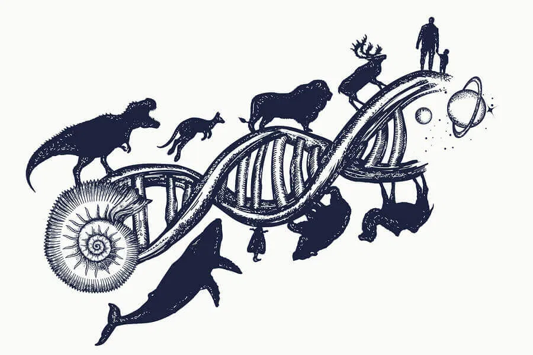

Enfermedades Básicas Psicología cognitiva Estudia los procesos mentales que permiten el conocimiento, es decir, la experiencia. La percepción, la memoria, el lenguaje y el pensamiento son sus áreas de interés. Psicología del aprendizaje Se dedica al estudio de los procesos de adaptación y cambio más o menos permanente en el individuo, es decir, al modo en que el ser humano aprende.  Psicología evolutiva Estudia las distintas etapas del crecimiento y desarrollo de la psique humana a lo largo de su vida.